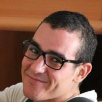
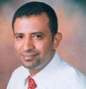
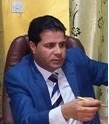
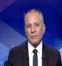

بسم الدين زورًا أزهقوا أرواح أبرياء مسلمين وغير مسلمين
أحمد حسين
سجل وافر من دماء الأبرياء جعلهم في مرتبة الحكام المستبدين، وربما يزيد. أؤمن بأنه لا يجب تحميل من فقد الأمل في الحياة، وتم دفعه من واقع ظلم المستبدين المسؤولية كاملة،
وأقول عن هؤلاء: ضحايا الظلم، ولكن ظلمهم فاق الظلمات، وبطشهم الذي استباح المحرمات.
إقراء 
للخبرة المتفاوضين في الكويت..معاكم لُقمة للكلاب ؟
فكــري قاسـم
قالوا رفاهية الحيوان من رفاهية الإنسان ، ابوها رفاهيتنا تسير ملح والوضع الاقتصادي المتردي اللي نعيشه في البلاد اليوم لم ينعكس سلبا على
مأكلنا ومشربنا وملبسنا نحن المواطنين فقط ، وإنما انعكس اثره ايضا على الكلاب والقطط وما أرحم حقنا الكلاب لما يمشي من جنبهن كلب أجنبي
إقراء 
قطر على رأس قائمة الدول الحاضنة لحسابات تويتر المؤيدة لداعش.
عبد الرضا الساعدي
منذ احتلال العراق عام 2003، والهدف الصهيوني هو تقسيم العراق إلى ثلاثة أقاليم، كذلك إسقاط محور المقاومة ضد النفوذ الأمريكي الصهيوني،
وحماية الكيان الإسرائيلي
إقراء 
ســوريا .. وبشاعه الحرب .. من مجزره الى أخرى
محمد السريحي
في مثل ذلك اليوم، قبل خمسة أعوام، لم تعد سوريا كما كانت. أكثر المتشائمين، أكثر السوداويين، وكل من كان يستعد للحريق السوري الكبير،
بما في ذلك المتآمرون، لم يكن يخيل اليه، سوريا التي نراها اليوم.
إقراء 
الرئيس عبد الفتاح السيسي .. عبد الناصر العصر
أحمد موسى
إن الرئيس عبد الفتاح السيسي تقدم بواجب العزاء له هاتفيًا في وفاة والده. وأضاف موسى خلال تقديمه برنامج “على مسؤوليتي” المذاع على فضائية “صدى البلد”
إقراء
بسم الدين زورًا أزهقوا أرواح أبرياء مسلمين وغير مسلمين
بقلم / أحمد حسين
سجل وافر من دماء الأبرياء جعلهم في مرتبة الحكام المستبدين، وربما يزيد. أؤمن بأنه لا يجب تحميل من فقد الأمل في الحياة، وتم دفعه من واقع ظلم المستبدين المسؤولية كاملة،
وأقول عن هؤلاء: ضحايا الظلم، ولكن ظلمهم فاق الظلمات، وبطشهم الذي استباح المحرمات.
بسم الدين زورًا أزهقوا أرواح أبرياء مسلمين وغير مسلمين في تفجيرات وهجوم مسلح في عدة بلدان عربية وغربية. بسم الدين زورًا ذبحوا 21 قبطيًا مصريًا في ليبيا.
بسم الدين فجروا كنيسة البطرسية، وقتلوا 25 امرأة وطفلة. بسم الدين نفذوا عمليات انتحارية في مدنيين!
بسم الدين كفروا «أردوغان» وتركيا التي قدمت لقضايا المسلمين والمظلومين أكثر مما يتخيل متعاطف أو مؤيد لداعش، وعلى العكس مما جلبته يد التنظيم
من خراب أعظم على المجاهدين بقتالهم وتكفيرهم وجلبهم الخراب على عوام المسلمين. بسم الدين كفروا، وذبحوا، وسيذحبون من يتعامل مع الجيش المصري، ولو بشربة ماء.
بسم الدين أعدمتم حرقًا الطيار الأردني «معاذ الكساسبة» بحجة أنه عقاب على قصفه، وحرق المسلمين، ولم تستند فتواكم حينها على أدلة شرعية واضحة تبيح فعلتكم.
واليوم على خطى ما فعلتم؛ قتلتم حرقًا أسيرين تركيين مسلمين، لم تأسروهم من طائرة، ولم يستخدموا الطائرات في حرق المسلمين! فلماذا أشعلتم النيران في أجسادهم أحياء؟
لأنكم مارستم كل أنواع القتل، وأبشعها، وأصبح القتل شهوة؛ تتلذذون بإيلام ضحاياكم؛ لإشباع رغباتكم، وإرضاء نفوسكم المريضة.
إعجاب تعليق
مشاركة
للخبرة المتفاوضين في الكويت..معاكم لُقمة للكلاب ؟
بقلم/ فكري قاسم
2019/12/1 20:30 PM
قالوا رفاهية الحيوان من رفاهية الإنسان ، ابوها رفاهيتنا تسير ملح والوضع الاقتصادي المتردي اللي نعيشه في البلاد اليوم لم ينعكس سلبا على
مأكلنا ومشربنا وملبسنا نحن المواطنين فقط ، وإنما انعكس اثره ايضا على الكلاب والقطط وما أرحم حقنا الكلاب لما يمشي من جنبهن كلب أجنبي
مربرب "يقعين" لاوجهه وكأنهن يشوفين الرئيس الأمريكي. وفي بلدان الله يمشي الكلب وهو "يزقًع "و"يتقمبع" وذيله يرقص وراسه مرفوع ، والكلاب
حقنا يارحمتاه ، واحد "سبلته مبسوقة " وواحد اذنه مقطوعة وواحد اعرج وواحد اعور وووجوههن قاحفة واجسادهن سبحان الله والرشاقة ، وكل الكلاب عندنا
هذه الايام يمشين وهن مبلودات ومدهننات للارض ، مش خوف ولا انسكار ولا هي قلة رجالة لاسمح الله ولكنهن جاوعات يدورين لاشي لقمة مرجومة هنا والاهناك
يقحطينها ويحمدين الله ويشكرنه على نعمة الاسلام. وقبل اسبوعين مشيت من جنب بوفية تبيع خبز طاوة ،في ميدان التحرير بصنعاء وشفت بين الكراسي على الشارع كلب
"مُقعلل" بمجرد ما غادر الزبون نبع فوق الطاولة وقحط بقايا الخبزة الطاوة مع الزيت والقرطاس ولا عنده ذرة هم من آلآم قرحة المعدة ،
حتى الكلاب البوليسية حق دار الرئاسة في صنعاء كان الواحد منهن - قبل اقتحام مليشيا الحوثيين العاصمة - مربرب وعليه المهابة ، تشوفه تقول خيل ، واليوم يارحمتاه
لهن طعفروهن في الشوارع واصابهن الإحباط ، واخرة مرة شفت واحد من كلاب دار الرئاسة وهو مربوط للفرجة الى حذع حديدة على رصيف شارع جمال بصنعاء .
كان شكله ضايق وحانب حنبة جن ومشو داري ايش غلطته بالضبط ولا داري تبع من هوه ؟ لو هو تبع الشرعية الدستورية مثلا ليش فلتوه في صنعاء وهم متنعمين في الرياض ،ياعيباه ؟!
ولو هو تبع سلطة الامر الواقع ليش اهانوه كل هذه الإهانة طيب ؟ وعلى الاقل كانوا يخلوه مشرف لأحدى حواري العاصمة ومالهم إلا يندع الصرخة ويزومل ويلعن سنسفيل ام العدوان للصبح.
ولايختلف الأمر مع "أسود" حديقة الحيوان في تعز . هن الاخريات قد حالهن حالة ولاشفع لهن انهن من بقايا تركة الإمام أحمد بن يحي حميد الدين ، إذ تركهن بعد ثورة سبتمبر ا
لعظيمة في قصره وغادر واعتنت بهن الثورة لفترة من الوقت . في البداية كانوا يأكلوهن لحم جمال ، ثم لحم حمير ، ثم جاءت سياسة التقشف ورجعوا يأكلوهن لحم قرود وشويه
شوية وقدهم بيأكلوهن دجاج ، وقبل الحرب قد كانين يأكلين عصيد ومرق وكدم وبطاط وسحاوق وشاهي احمر بعد الصبوح . واليوم يارحمتاااااه محاصرات في "الحوبان"
جيزهن بذلك من جيز ابناء تعز المحاصرين وماعد ناقص الا يأكلوهن "زبادي" ويصومين معانا رمضان والست البيض ، وقاهي إلاهيه ،، إسلام يا إسلام .
إعجاب تعليق
مشاركة
قطر على رأس قائمة الدول الحاضنة لحسابات تويتر المؤيدة لداعش
عبد الرضا الساعدي
2019/12/1 20:30 PM
منذ احتلال العراق عام 2003، والهدف الصهيوني هو تقسيم العراق إلى ثلاثة أقاليم، كذلك إسقاط محور المقاومة ضد النفوذ الأمريكي الصهيوني،
وحماية الكيان الإسرائيلي، وبشكل أكثر وضوحا وتفصيلا فإن مشروع إقامة إقليم طائفي غرب العراق سوف يقطع الإمداد البري من إيران إلى سوريا
عبر العراق – كما يرى المختصون وأصحاب الرأي –وهو ما يسهل من إضعاف سوريا التي سوف تصبح مطوقة من ثلاث جهات وهي تركيا من الشمال
والإقليم السني شرقا والأردن وإسرائيل جنوبا، ومن ثم إسقاطها وتفتيتها إلى كانتونات طائفية، أو (صوملة )سوريا، لتحقيق الأهداف المرسومة لها.
أرادت أمريكا من خلال حلفائها وأدواتها في المنطقة ( تركيا .. السعودية .. قطر ) تحقيق هذا الهدف الخطير وغيره من الأهداف المشؤومة ، وبالتحديد
كانت _قطر_ أحد هذه أطراف هذا الثلاثي الشرير ، ومازالت الأداة الصهيونية في المنطقة التي تدعم وتخطط وتنفذ المشاريع الإرهابية والتقسيمية في المنطقة ، وتحديدا في العراق وسوريا .
لقد كشفت صحف أمريكية في وقت سابق ، ومنها «واشنطن بوست» ، عن تمويل الجمعيات الخيرية الإسلامية للتنظيمات الإرهابية بالملايين، ومشيرة إلي
أن الأسرة الحاكمة في قطر سعت للحصول على نصيحة بشأن العطاءات الخيرية وتوجهت إلى ما يعرف ب (عبد الرحمن النعيمي) ، الذي يعمل، وفقا
لمسؤولين أمريكيين، وبشكل سري في تمويل تنظيم القاعدة.
وذكرت الصحيفة ‘‘أن النعيمي لديه سيرة ذاتية ممتازة تضمنت خبرة واسعة في جمع التبرعات وسنوات من العمل مع الجماعات الدولية لحقوق الإنسان،
غير أنه كان ممولا لتنظيم القاعدة حيث كان يحول ملايين الدولارات إلى الفروع التابعة لتنظيم القاعدة في سوريا والعراق‘‘ .
وإضافة إلى دعمها المالي المعروف ، فهناك دعم آخر لا يقل خطورة عن هذا ، فقد كشف تقرير إعلامي ألماني مؤخرا ، أن قطر أكبر حاضنة لحسابات
تغرد لصالح "داعش" فى العالم العربى والإسلامي، وأظهر تحليل حسابات التويتر باللغة العربية أن كل ثانية تغريدة كانت تحمل خبرًا داعمًا ومؤيدًا لتنظيم
"الدولة الإسلامية"، أى بمعنى أن 50% من تغريدات قطر تغنى لداعش، وبذلك تقف قطر على رأس قائمة الدول الحاضنة لحسابات تويتر المؤيدة لداعش.
إعجاب تعليق
مشاركة
ســوريا .. وبشاعه الحرب .. من مجزره الى أخرى
بقلم / محمد السريحي
2019/12/1 20:30 PM
في مثل ذلك اليوم، قبل خمسة أعوام، لم تعد سوريا كما كانت. أكثر المتشائمين، أكثر السوداويين، وكل من كان يستعد للحريق السوري الكبير،
بما في ذلك المتآمرون، لم يكن يخيل اليه، سوريا التي نراها اليوم.
ليست ترفا هذه الخلاصة. حدق في عيون أي سوري، او عربي، فستراها. تمشَّ في شوارع عاصمة الحضارات دمشق، فستشاهد ما لم تكن تتصوره للوهلة.
تأمل صور الألم من حلب وتدمر ودير الزور والرقة وحمص وجبلة وتلبيسة وطرطوس وعين العرب والحسكة وادلب. ما من عالم مفجوع اكثر من اهلها.
ما من حرب اكثر بشاعة، برغم كل ما كان يقال بأن كل الحروب مقيتة. هذه الحرب مختلفة. انها دمك الذي ينزف امامك. تخيل أصابع الصغار معلقة بأطراف
النجاة في عرض البحر. تخيل جنديا نفدت ذخيرته وهو محاط بوحوش العصر. تخيل متظاهرا ظن ان العالم يدور حول افكاره، وانه ما ان ينزل الى الشارع حتى تصير سوريا وردية.
تخيل كل ما يتسع له خيالك، من مشاهد لانفجارات وغارات وحفلات مجون الذبح على الهوية والعرق والعشيرة. تخيل اكثر، الجوعى والعطشى والمطوقين بالخوف
من ان يصلبوا امام ابنائهم. تخيل العالم القتيل، والشاعر القتيل، والجندي القتيل، والطفل القتيل، والركام الذي صار شاهدا على عنفنا وظلمنا وعصبياتنا، وعلى أعمارنا
التي انطوت تحتها، وتذكر مؤامرات «الجيران» و «الاخوة» الغدارين والرايات السود ورايات الاستعمار التي رفرفت في كل مدينة وحي وشارع، وتذابح المتصارعون
تحتها. تذكر اناشيد التكفير التي لم تكن تسمعها من قبل، ووجوه الاسلاميين الضالين المنتظرين حور العين.
تخيل ان يقتلك شقيقك! تخيل ان كل ما بنيته بعرقك وعرق اجدادك جرفته انهار الدم. وان الكل مقتول ولو لم تمسسه رصاصة.
هنا شهادات، لا تعكس صورة سوريا التي نراها الآن ، ولا هي لائحة بالكوارث السورية، هي بعض الحقيقة، وهي بعض ما لا يوصف من الالم.
تذكر ذلك اليوم في العام 2011، عندما قلنا ان سوريا لن يمسسها الشيطان.. لكنه فعل.
إعجاب تعليق
مشاركة